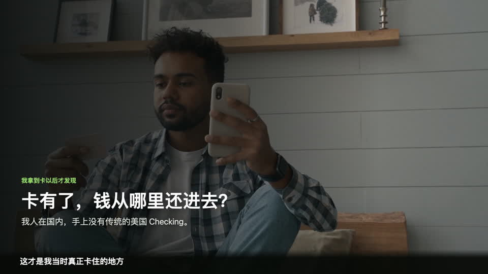
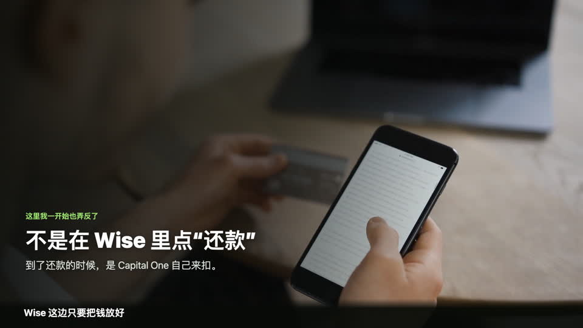
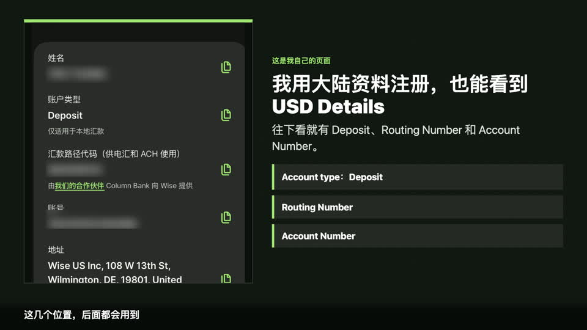
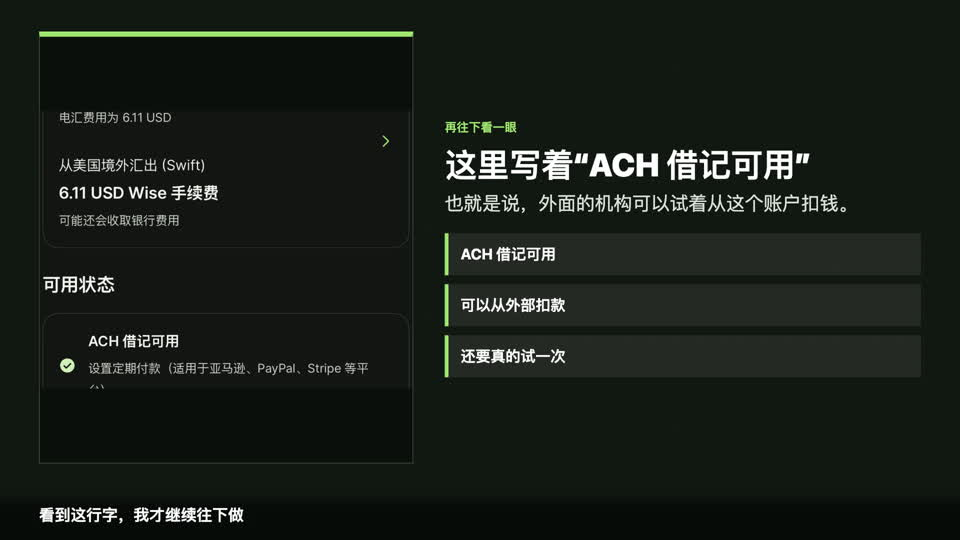
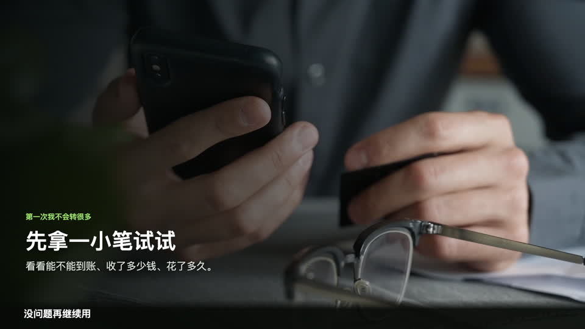
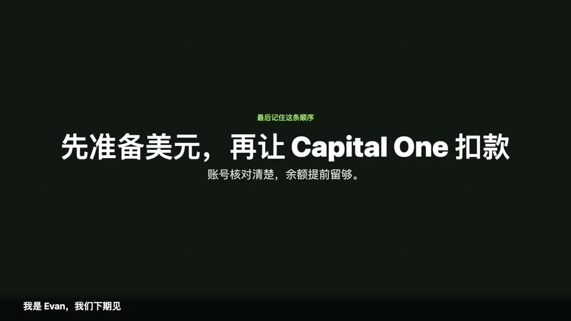

先说明：本文记录的是我本人 Wise 和 Capital One 页面中看到的功能，以及我准备验证的资金路径。Wise 的 USD Account Details、Direct Debit 和具体入金方式会受注册地区、账户资格与产品变化影响；页面显示可用也不代表某次信用卡扣款一定成功。
后来我打开 Wise，发现自己的 USD 页面里正好有美元余额、Routing Number 和 Account Number。我开始想：这组资料能不能作为 Capital One 的还款账户？
为了把这件事弄明白，我主要看了三个问题：Wise 到底给了我什么，钱怎么放进 Wise，以及到了还款的时候，Capital One 又是怎么把钱扣走的。

先把方向弄对：不是在 Wise 里点击“还信用卡”
我一开始也把方向想反了。实际流程不是打开 Wise，再点一个“偿还信用卡”的按钮。
我的理解是：先把钱转进 Wise，按需要换成美元并留在 USD Balance；到了还款时，由 Capital One 通过已经绑定的账户资料发起扣款，Wise 负责让对应余额可用。
一句话记忆：Capital One 负责来扣钱，Wise 负责账户里有钱。一个发起扣款，一个准备余额，方向不要弄反。

Wise 这边，我主要检查三处
1. USD Balance
USD Balance 是美元余额。真正发生美元扣款时，首先要确认这里有足够可用资金。有账户信息，不代表账户里已经有钱。
2. USD Account Details
USD Account Details 是账户资料。我自己的 Wise 使用中国大陆资料注册，打开 USD 页面后，能够看到 Deposit、Routing Number 和 Account Number 等字段。这只是我个人账户当前的实际情况，并不代表所有地区、所有 Wise 用户都会获得同样功能。
Wise 官方也明确说明，USD account details 会提供用于收取美元的 routing number 和 account number，但它本身不等同于传统银行账户，而且某些地区不提供 USD account details。
查看 Wise 官方 USD Account Details 说明

3. 页面是否显示 ACH 借记或 Direct Debit 可用
我继续查看本人 USD 页面，看到“ACH 借记可用”的状态。简单理解，就是外部机构可以尝试通过这组账户资料发起扣款。看到这一项后，我才继续研究绑定流程。
Wise 将这类授权称为 Direct Debit：向需要付款的公司提供本人账户资料，由对方建立扣款指令。但功能是否可用、某个商户是否接受，以及某次扣款能否完成，都必须以本人页面和实际交易为准。

填写账户资料时，只看自己的页面
轮到绑定时，我只从自己的 Wise 页面复制资料，不会照着网上的示例号码填写。需要核对的是：
- 账户姓名是否与 Capital One 持卡人姓名一致；
- 使用的是本人 USD 页面提供的 ACH Routing Number；
- Account Number 是否逐位复制并完成二次核对；
- 账户类型和页面用途是否符合 Capital One 当前要求。
Capital One 当前官方帮助页说明，添加外部付款账户时需要填写 Account Type、Bank Routing or ABA Number、Account Number，并再次验证账户号码；相关外部账户还要求账户持有人姓名匹配。
隐私提醒：不要公开或通过普通邮件发送本人 Routing Number、Account Number、银行账单、信用卡号、验证码、密码或身份证件。文中图片已对姓名和账户号码做脱敏处理。
USD 资料和 HKD 资料不能混用
我的 Wise 账户里同时还有一组 HKD 账户信息，但它和 USD Account Details 不是一回事。HKD 页面用于香港本地收款，这一期研究的是 USD 页面中的美国 ACH 资料。
不同币种的账户姓名、号码、银行信息和使用场景都可能不同，不能把 HKD 的本地收款资料填进需要 USD ACH 资料的位置，也不能根据币种名称猜测字段。
为什么我会考虑 Wise
原因其实很直接：美元可以留在 Wise 的余额里，金额能够清楚看到；同时，我的账户里又有一组 USD Account Details，并显示 ACH 借记可用。
对我现阶段来说，这提供了一条可以验证的资金路径。但“能看到资料”和“实际扣款成功”仍然是两件事。Wise USD details 不是传统美国 Checking，也不应把它宣传成对所有信用卡、所有地区都保证可用的替代方案。
钱怎么放进 Wise
这里不能只看一个“充值”按钮，而要先看资金原来在哪里。资金来源不同，放进 Wise 的路径也不同。
路径一：资金本来就在美国账户，而且已经是美元
如果钱已经在本人美国账户中并且是美元，可以根据本人 Wise USD Account Details 和银行页面支持的方式，通过美国本地转账把美元转入 Wise 的 USD Balance。
路径二：资金在香港银行
如果钱在香港银行，可以先按照本人 Wise HKD 页面支持的方式，把港币转入 HKD Balance；到账后，再在 Wise 内根据当时显示的汇率和费用换成美元。
无论走哪条路，最后都要检查 USD Balance
如果转入的不是美元，我会先看清汇率、费用和实际到账金额；如果本来就是美元，也要核对最终收到多少。Wise 官方说明，用户可用的入金方式会随币种、金额和注册地区变化，也可以从银行向本人 Wise account details 发起转账。
第一次先做小额测试
第一次我不会转很多，而是先拿一小笔验证。到账后，我会检查号码是否填对、实际费用、到账金额和用时。小额测试只能帮助验证资金路径，不能保证之后每一笔都会以相同速度、费用或结果完成。

最后一步：由 Capital One 发起扣款
资金准备好后，才轮到 Capital One。绑定外部付款账户的操作在上一期已经记录过：Capital One 根据填写的账户资料找到付款账户，并在付款或 AutoPay 执行时发起扣款。
因此，即使 Routing Number 和 Account Number 全部正确，如果 USD Balance 没有足够资金，扣款仍可能失败。还款日前，我会预留足够美元，并给资金到账和异常处理留出时间。
扣款以后，要同时检查两边
页面显示 ACH 借记可用，不代表信用卡已经还款成功。真正验证这条路径，需要至少检查：
- Capital One 的付款状态是否完成，而不是仍在处理中或被退回；
- Wise 的 USD Balance 是否按对应金额减少；
- 两边显示的金额和日期是否能够对应；
- Capital One 账单是否在截止日前满足付款要求。
AutoPay 或 Direct Debit 能减少手动操作，但不能代替主动检查。账户余额不足、资料不匹配、验证失败、功能变化或银行退回，都可能导致付款没有按计划完成。
我的完整资金路径
- 打开本人 Wise USD 页面，确认能够看到 USD Balance 和 USD Account Details。
- 确认本人页面明确显示 ACH 借记或 USD Direct Debit 可用。
- 根据资金来源选择合规入金路径，并核对汇率、费用和到账时间。
- 先做小额测试，最后在 USD Balance 中准备足够美元。
- 只把本人页面中的账户姓名、ACH Routing Number 和 Account Number 填入 Capital One 官方付款设置。
- 由 Capital One 发起扣款，并同时核对 Capital One 付款状态和 Wise 余额变化。

免责声明：本文仅为 Evan 的个人经验、账户页面观察和信息整理，不构成金融、税务或法律建议，也不保证 Wise 账户资格、USD Account Details、Direct Debit、Capital One 绑定、付款成功、到账时间或费用结果。产品功能和规则可能变化，请以 Wise、Capital One 官方信息及本人账户页面为准。
邀请链接披露：视频说明区或后续页面如提供 Wise 邀请链接，通过该链接注册后，我可能获得推荐奖励；使用邀请链接不会保证账户功能、审核结果或任何优惠。
前后篇
上一篇：Capital One Platinum 到手后怎么设置？激活、AutoPay、账单
下一篇：Capital One 不让我查信用分？ITIN 用户先看懂这件事